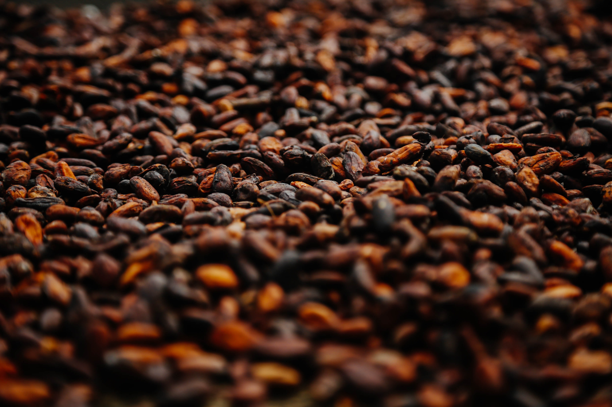
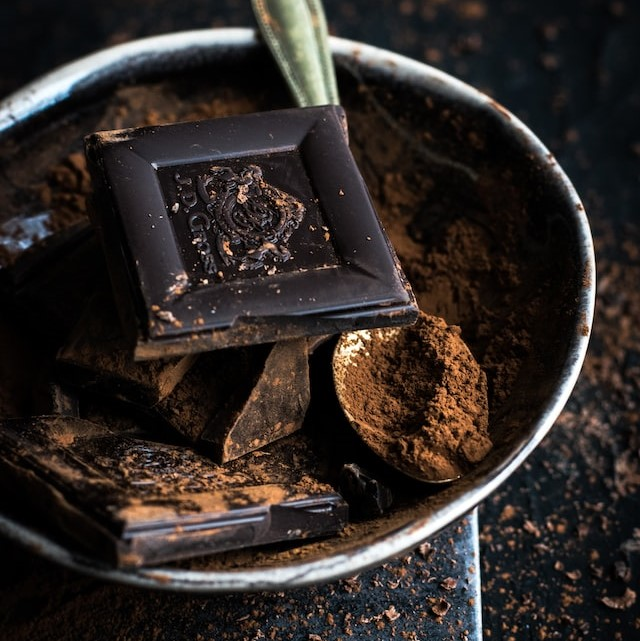
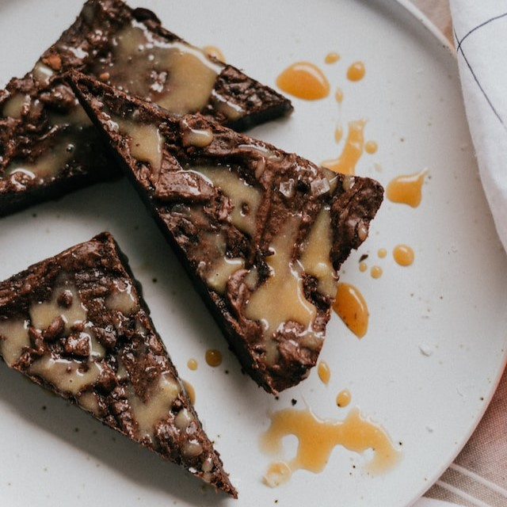
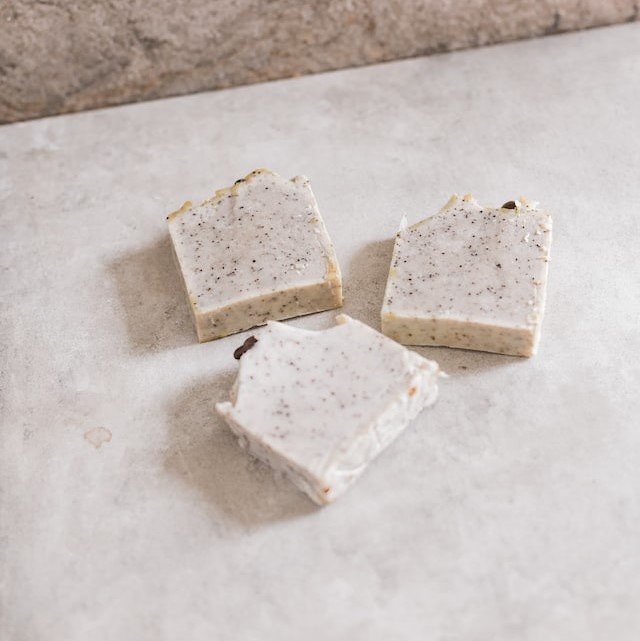

Cokelat adalah sebutan untuk makanan atau minuman olahan yang barasal dari biji kakao (Wikipedia).
Sejarah

Spanyol adalah negara Eropa pertama yang mencampurkan cokelat ke dalam olahan masakan.
Berawal dari pelaut Italia bernama Christopher Columbus yang membawa biji kakao ke Spanyol pada pelayaran keempatnya tahun 1502.
Sumber lain mengatakan bahwa pada 1519, penguasa Aztec di Meksiko bernama Montezuma II menyajikan minuman biji kakao pahit kepada Conquistador Spanyol Hernán Cortés.
Cortés kemudian memperkenalkan minuman tersebut ke Spanyol pada 1544 dengan mambawa perwakilan dari suku Maya Kekchi dari Guatemala.
Namun, baru pada 1585 pengiriman biji kakao tercatat pertama kali tiba di Spanyol dari Veracruz, Meksiko (Kompas).
Tentang Saya
Saya memilih coklat sebagai tema website saya karena cokelat hampir disukai semua kalangan. Selain enak, cokelat juga menyimpan berbagai manfaat bagi tubuh, mulai dari meningkatkan mood hingga menjaga kesehatan jantung.
Mulai dari anak-anak, remaja, hingga orang dewasa, banyak yang gemar makan cokelat. Selain rasanya yang khas dan nikmat, cokelat juga memiliki manfaat bagi kesehatan.
Cokelat merupakan olahan biji kakao yang dipanggang, digiling, lalu dibentuk menjadi cairan, pasta, atau dalam bentuk balok. Dark chocolate atau cokelat hitam mengandung antioksidan, vitamin, serta mineral yang baik bagi tubuh.
Kini sudah banyak cokelat yang diolah dengan penambahan gula, susu, dan lain sebagainya. Alih-alih mendapatkan manfaat cokelat bagi kesehatan, konsumsi cokelat jenis ini justru berbahaya bagi kesehatan (Klikdokter).
Jenis-Jenis Cokelat
Rasa manis cokelat dan sedikit 'bumbu' pahit, khususnya pada dark chocolate, tentu menggiurkan. Namun, sebelum belanja bahan-bahan kebutuhan masakan, sebaiknya cek dulu menu apa yang ingin dibuat. Beda jenis cokelat akan memberikan rasa dan tekstur berbeda.
Berikut jenis cokelat yang umum di pasaran dan penggunaannya berdasarkan CNN Indonesia.

Dark Chocolate

Candy Coating ChocolateMilk Chocolate

White Chocolate